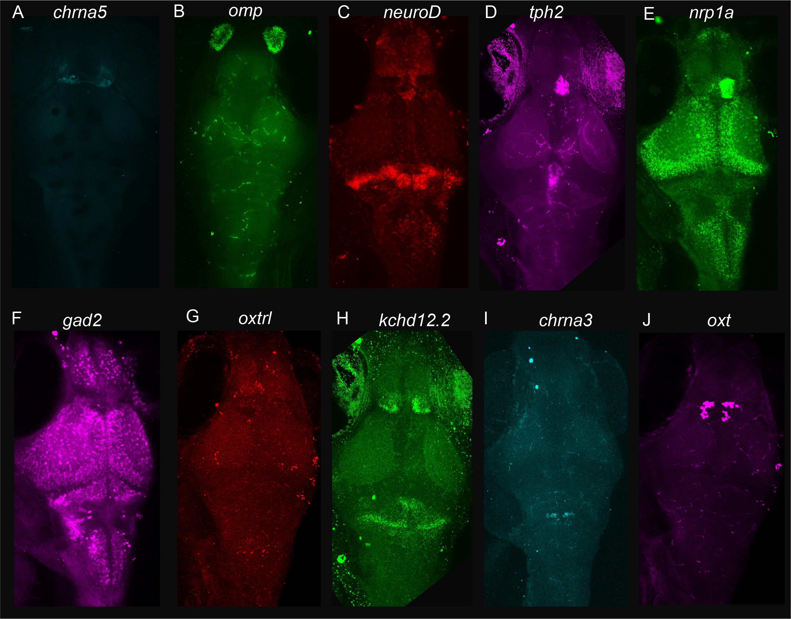

HCR Probe Designer
A web-based tool for designing Hybridization Chain Reaction (HCR) probes. The app automates probe generation, amplifier selection, and sequence formatting for multiplexed spatial transcriptomics experiments.

RGB HCR Probe Designer
A web-based tool for designing RGB based Hybridization Chain Reaction probes. This app helps you design probes for channel combinations for multiplexed spatial gene expression patterns.